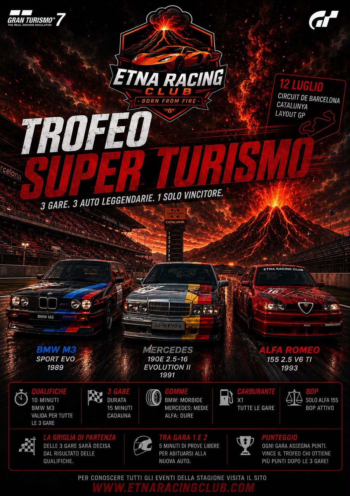
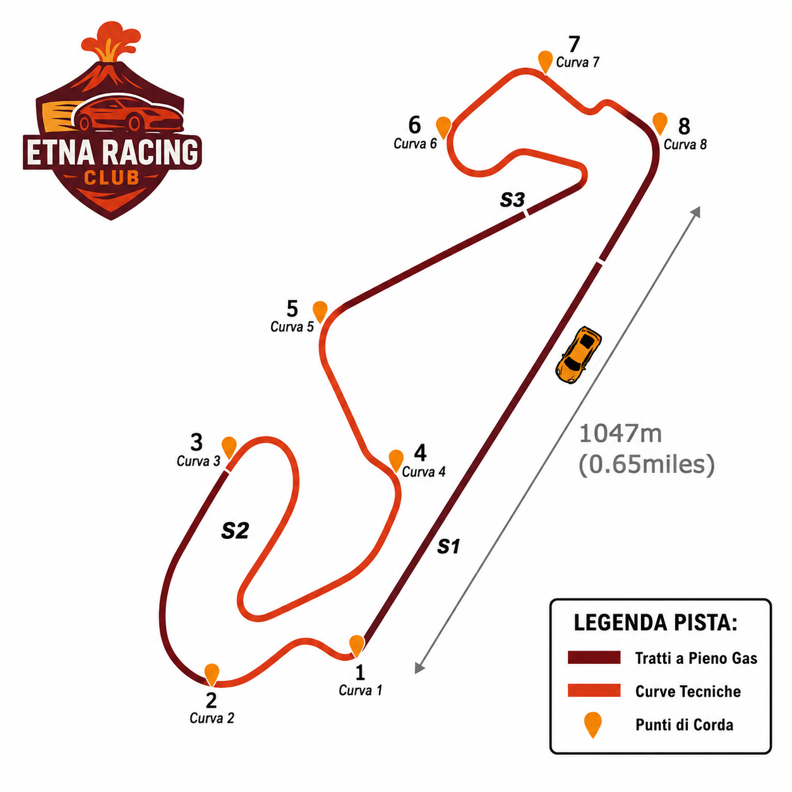
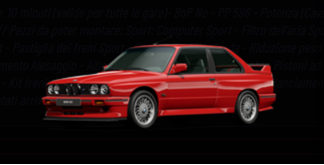
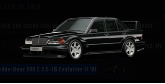
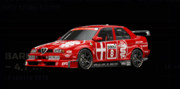

Questa domenica andrà in atto una gara diversa dalle altre, sarà divisa in 3 manches da 15 minuti ciascuna, si disputerà nella pista di Barcellona e vedrà i piloti darsi battaglia con auto che hanno fatto la storia del Super Turismo degli anni 90, l’Alfa 155, la Bmw M3 e la Mercedes 190 E
Siamo riusciti ad intervistare qualcuno dei piloti che scenderanno in pista
Giovanni ci ha detto che a lui questo trofeo piace, sia perché crede di andare bene sia perché lo vede molto tecnico, prevedere però pochi sorpassi, secondo lui Pierpaolo e Carmine (che forse si sta un po’ nascondendo) potrebbero essere i reali pericoli, Stefano pagherà il fatto di non avere a disposizione l’Alfa mentre Cola è un bel punto di domanda per il fatto che potrebbe aver impostato erroneamente le auto. E’ convinto che ogni piccolo errore apra la strada a tutti, e quindi, che vinca il migliore
Carmine invece ci ha confessato di essere un po’ preoccupato perché sente di avere delle difficoltà a guidare queste tipo di auto (non da competizione – ndr), spera almeno di essere un po’ più competitivo con l’Alfa perché provandole è stata quella con cui è riuscito ad avere un passo gara migliore
Stefano dal canto suo ci ricorda che nelle ultime gare ha avuto incidenti poco dopo il via e che quindi sono state gare difficili per lui, per questa nuova gara avrà invece il “deficit” di poter fare solo 2 manches su 3 perché non in possesso della mitica Alfa 155 però ci ha promesso che avrà lo stesso il coltello tra i denti, i tempi crede di averli, il passo pure quindi spera di essere lì a combattere con i vari Giovanni Pierpaolo e Carmine anche se si aspetta come sorpresa Claudio
Daniele ha voluto dirci inizialmente che ha molto apprezzato questo format dell’Etna Racing Club, per quanto riguarda la pista invece è riuscito a trovare un buon feeling trovando sensazioni piacevoli e divertenti permettendo di correre con la giusta leggerezza. Ha ribadito il suo apprezzamento per questo evento facendoci però notare che anche lui non potrà gareggiare con l’Alfa per lo stesso problema di Stefano
Infine abbiamo avuto modo di intervistare anche Pierpaolo che ci ha raccontato di come non veda l’ora di accendere i motori per questo trofeo visto che gli ricorda quando lui da ragazzino guardava queste auto darsi battaglia e non vede l’ora di fare altrettanto con i suoi avversari
Cos altro aggiungere se non che abbiamo avuto la sensazione che i piloti intervistati non vedono l’ora di darsi delle sportellate in questa gara che si preannuncia caldissima



